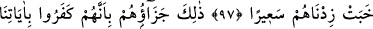
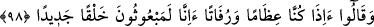
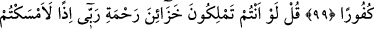
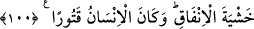

İNSANOĞLU
PEK ELİ SIKIDIR!
94. Zâten, kendilerine hidâyet rehberi geldiğinde, insanların (buna) inanmalarını
sırf, “Allah, peygamber olarak bir beşeri mi gönderdi?” demeleri engellemiştir.
95. Şunu söyle: Eğer yeryüzünde yerleşmiş gezip dolaşan melekler olsaydı,
elbette onlara gökten, peygamber olarak bir melek gönderirdik.
96. De ki: Benimle sizin aranızda gerçek şâhid olarak Allah yeter. Zira O,
kullarını hakikaten bilip görmektedir.
97. Allah kime hidâyet verirse, işte doğru yolu bulan odur; kimi de hidâyetten
uzak tutarsa, artık onlara, Allah’tan başka dostlar bulamazsın. Kıyâmet gününde
onları kör, dilsiz ve sağır bir halde yüzükoyun haşrederiz. Onların varacağı ve
kalacağı yer cehennemdir ki, ateşi yavaşladıkça onun alevini artırırız.
98. Cezaları işte budur! Çünkü onlar, âyetlerimizi inkâr etmişler ve: “Sahi bizler,
bir kemik yığını ve kokuşmuş toprak olduktan sonra yeni bir yaratılışla diriltilmiş
mi olacağız?” demişlerdir.
99. Düşünmediler mi ki, gökleri ve yeri yaratmış olan Allah, kendilerinin
benzerini yaratmaya da kadirdir! Allah, onlar için bir vâde takdir etti. Bunda şüphe
yoktur. Ama zalimler, inkârcılıktan başkasını kabullenmediler.